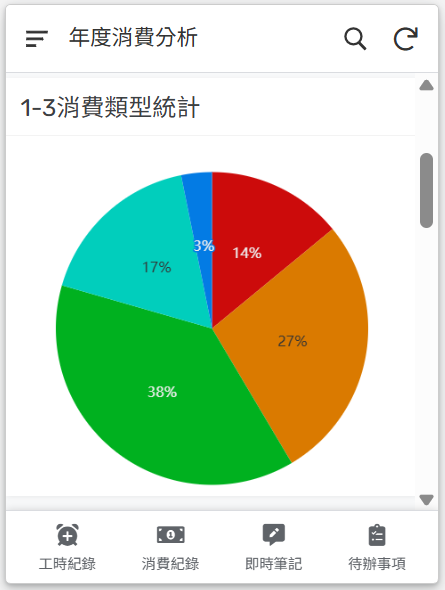
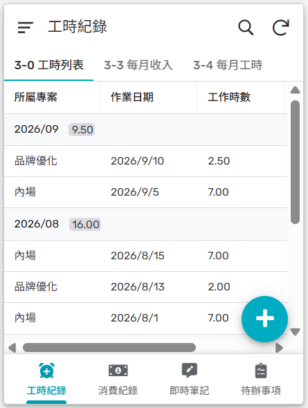
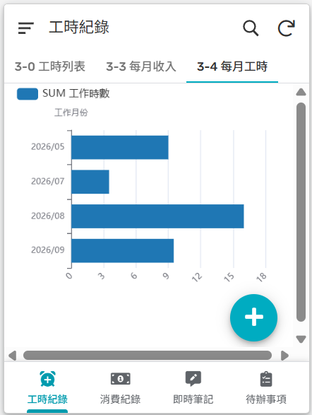
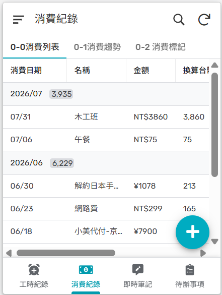
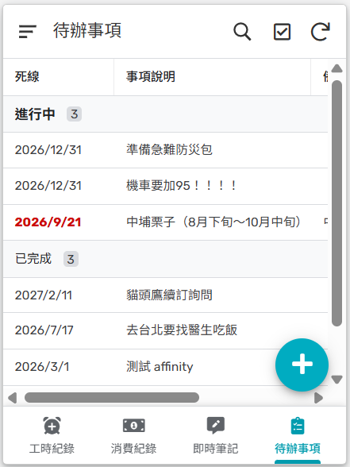
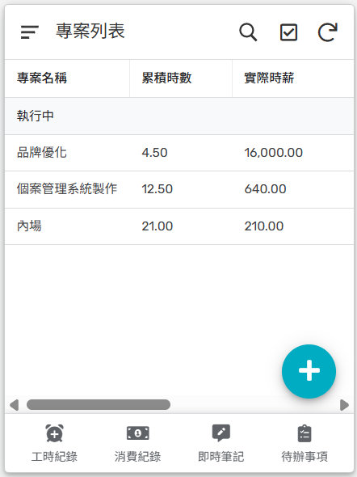
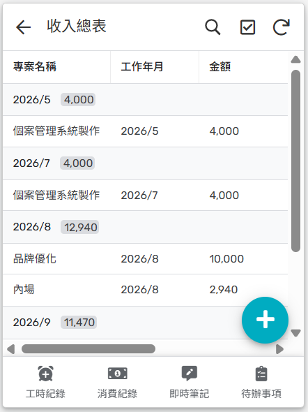

Products
由 mengyahh 打造的小型數位工具。把容易被忽略、卻天天在發生的紀錄——雞舍裡的每一批數字、接案生活裡的工時與收支—— 整理成看得懂、用得上的資訊。目前有兩個進行中的專案：
Product 01 · 開放試用中
接案生活常常要同時追蹤好幾個合作單位的專案、費用、工時，記帳又是另一套系統—— 給自由工作者的生活工作管理大師把接案紀錄、多幣值記帳、待辦與靈感筆記整合在同一個工具裡， 不用在好幾個 App 之間切換。這個工具最初是開發者為了解決自己接案生活的管理需求所打造的， 不是先設計好功能表再找使用情境，而是先有真實的痛點，才長出現在這些功能。
記錄合作單位、專案、費用方式（時薪或固定），並填寫預估工時。
另有一張表隨時登記實際花費的工時，自動跟預估工時比較，慢慢練出更準的估價能力。
付款方式、消費類型都能記錄，不同幣值的收支統一換算成單一幣值分析，不用自己心算匯率。
月度／年度收入、與目標收入的差額、收入來源（依合作單位）、消費類型與消費方式的金額分布，一次看懂。
待辦事項依期限自動排序，可設完成或暫緩；靈感隨手記下，不怕想法轉眼就忘。
想看的書、電影、展覽都能記，上傳截圖或網址，標記已完成／已購買／未確認；上傳的圖片會自動轉成文字，不用手key。
App 實際畫面

年度消費分析

工時紀錄

每月工時趨勢

消費紀錄

待辦事項

專案列表

收入總表
畫面中的專案名稱、金額、日期皆為測試資料，非真實接案紀錄。
Product 02 · 開發中
白肉雞飼養紀錄系統是專門給 養殖白肉雞的中小型個體戶（不含蛋雞）設計的紀錄工具，資料留在自己手上，不綁特定設備商。
用水量、死雞與淘汰數量、飲水與用藥，每天花幾分鐘就能記完。
一批雞出清後自動結算換肉率（FCR）與育成率，不用自己拿計算機算。
把每一批的數字畫成圖表，方便比較不同批次的表現、抓出下一批要調整的地方。
不依附特定環控設備品牌，換設備、換系統都不會丟資料。
定位上參考國際上的 My Poultry Manager 這類養殖紀錄軟體，但鎖定台灣中南部的白肉雞契約戶（水簾式雞舍、 愛拔益加／樂斯等主力雞種），不是泛用的通用畜牧工具。從第一線的工作經驗出發，做出真正符合需求的系統： 不只是記錄，也能從圖表看見每一批的變化，找到可以改善、調整的地方，讓雞越養越好。
在這裡，灌木、蕨類、幼苗交錯共生，這裡雜亂同時生機無限。
在這裡，有表層看不見的、說不完的故事。
接案五年，做內容轉譯、文案撰寫、美編排版、動畫、攝影、剪輯、low-code 網站，服務過的對象橫跨社福組織的 個案管理系統、文化資產研究中心的政策論述、生態科普教材、地方文史平台，也接過稅務機關的政令宣導。 題材差很多，但做的事情其實很一致：站在「懂這件事的人」跟「需要用到這件事的人」中間，把落差填起來。 Understory 底下的產品，是同一個習慣的延伸——把容易被忽略的日常資料， 整理成看得懂、用得上的東西——不管是雞舍裡的數字，還是接案生活的收支。想看完整經歷，可以到 mengyahh.com 關於頁。